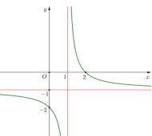
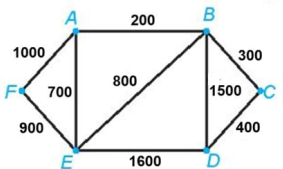
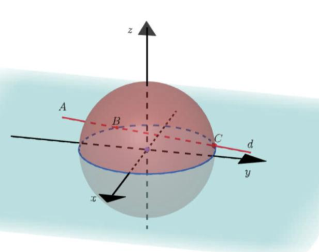
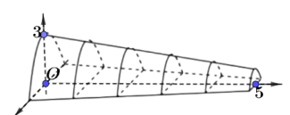

Nguyên hàm của \( x^n \) là \( \frac{x^{n+1}}{n+1} + C \) (với \( n \neq -1 \)).
Nguyên hàm của hàm số \( f(x) = x^3 \) là:
Chọn đáp án:
Lời giải:
Nguyên hàm của \( x^3 \) là \( \int x^3 \, dx = \frac{x^4}{4} + C \).
Đáp án: D.
Thể tích khối tròn xoay quanh trục \( Ox \): \( V = \pi \int_a^b [f(x)]^2 \, dx \).
Gọi \( D \) là hình phẳng giới hạn bởi các đường \( y = e^x \), \( y = 0 \), \( x = 0 \), và \( x = 1 \). Thể tích của khối tròn xoay tạo thành khi quay \( D \) quanh trục \( Ox \) bằng:
Chọn đáp án:
Lời giải:
Thể tích: \( V = \pi \int_0^1 (e^x)^2 \, dx = \pi \int_0^1 e^{2x} \, dx \).
Đáp án: A.
Độ lệch chuẩn: \( s = \sqrt{s^2} \), với phương sai \( s^2 = \frac{1}{n} \sum f_i (x_i - \bar{x})^2 \), \( \bar{x} \) là trung bình cộng, \( f_i \) là tần số, \( x_i \) là giá trị đại diện.
Độ lệch chuẩn của mẫu số liệu ghép nhóm trong bảng sau (làm tròn kết quả đến hàng phần mười) là:
| Nhóm | \([25; 35)\) | \([35; 45)\) | \([45; 55)\) | \([65; 75)\) | \([75; 85)\) |
|---|---|---|---|---|---|
| Tần số | 9 | 7 | 5 | 10 | 9 |
Chọn đáp án:
Lời giải:
Giá trị đại diện: \( 30, 40, 50, 60, 70 \).
Tổng tần số: \( n = 9 + 7 + 5 + 10 + 9 = 40 \).
Trung bình cộng: \( \bar{x} = \frac{9 \cdot 30 + 7 \cdot 40 + 5 \cdot 50 + 10 \cdot 60 + 9 \cdot 70}{40} = 50.75 \).
Phương sai: \( s^2 = \frac{9(30 - 50.75)^2 + 7(40 - 50.75)^2 + 5(50 - 50.75)^2 + 10(60 - 50.75)^2 + 9(70 - 50.75)^2}{40} = 221.9375 \).
Độ lệch chuẩn: \( s = \sqrt{221.9375} \approx 14.9 \).
Đáp án: D.
Phương trình đường thẳng qua \( A(x_0; y_0; z_0) \), vector chỉ phương \( \vec{u} = (a; b; c) \): \( \frac{x - x_0}{a} = \frac{y - y_0}{b} = \frac{z - z_0}{c} \).
Trong không gian \( Oxyz \), phương trình của đường thẳng đi qua \( A(-1; -1; 1) \) và có một vector chỉ phương \( \vec{u} = (1; 2; 3) \) là:
Chọn đáp án:
Lời giải:
Đường thẳng qua \( A(-1; -1; 1) \), vector chỉ phương \( \vec{u} = (1; 2; 3) \), có phương trình: \( \frac{x - (-1)}{1} = \frac{y - (-1)}{2} = \frac{z - 1}{3} \), tức \( \frac{x + 1}{1} = \frac{y + 1}{2} = \frac{z - 1}{3} \).
Đáp án: C.
Tiệm cận đứng của hàm \( y = \frac{ax + b}{cx + d} \) tại \( x = -\frac{d}{c} \).
Từ đồ thị hàm số, tiệm cận đứng của đồ thị hàm số là:
Chọn đáp án:
Lời giải:
Từ đồ thị, tiệm cận đứng là \( x = 1 \).
Đáp án: C.
Bất phương trình \( \log_a f(x) < \log_a g(x) \) (với \( a > 1 \)) tương đương \( f(x) < g(x) \), kết hợp điều kiện xác định.
Tập nghiệm của bất phương trình \( \log_5 (2x - 1) < \log_5 (x + 2) \) là:
Chọn đáp án:
Lời giải:
Điều kiện: \( \begin{cases} 2x - 1 > 0 \\ x + 2 > 0 \end{cases} \Leftrightarrow x > \frac{1}{2} \).
Bất phương trình: \( \log_5 (2x - 1) < \log_5 (x + 2) \Leftrightarrow 2x - 1 < x + 2 \Leftrightarrow x < 3 \).
Kết hợp: \( \frac{1}{2} < x < 3 \).
Đáp án: C.
Vector pháp tuyến của mặt phẳng \( ax + by + cz + d = 0 \) là \( \vec{n} = (a; b; c) \).
Trong không gian \( Oxyz \), cho mặt phẳng \( (P): 2x - y + z - 3 = 0 \). Vector nào dưới đây là một vector pháp tuyến của mặt phẳng \( (P) \)?
Chọn đáp án:
Lời giải:
Mặt phẳng \( 2x - y + z - 3 = 0 \) có vector pháp tuyến \( \vec{n} = (2; -1; 1) \).
\( \vec{n_1} = (-2; 1; -1) = -\vec{n} \), nên \( \vec{n_1} \) cũng là vector pháp tuyến.
Đáp án: D.
Đường thẳng vuông góc với mặt phẳng nếu nó vuông góc với hai đường thẳng không đồng quy trong mặt phẳng đó.
Cho hình chóp \( S.ABCD \) có đáy \( ABCD \) là hình vuông và \( SA \perp (ABCD) \). Đường thẳng \( BC \) vuông góc với mặt phẳng nào sau đây?
Chọn đáp án:
Lời giải:
Vì \( SA \perp (ABCD) \), \( BC \perp SA \). Trong đáy vuông, \( BC \perp AB \).
Mặt phẳng \( (SAB) \) chứa \( SA \) và \( AB \), nên \( BC \perp (SAB) \).
Đáp án: A.
Phương trình \( \log_a x = b \Rightarrow x = a^b \).
Nghiệm của phương trình \( \log_2 x = 3 \) là:
Chọn đáp án:
Lời giải:
\( \log_2 x = 3 \Rightarrow x = 2^3 = 8 \).
Đáp án: C.
Cấp số cộng: \( u_n = u_1 + (n-1)d \), công sai \( d = u_{n+1} - u_n \).
Cho cấp số cộng \( (u_n) \) có \( u_2 = 3 \), \( u_3 = 5 \). Công sai \( d \) của cấp số cộng là:
Chọn đáp án:
Lời giải:
\( u_3 = u_2 + d \Rightarrow d = u_3 - u_2 = 5 - 3 = 2 \).
Đáp án: B.
Trong hình hộp, các vector thỏa mãn các quan hệ cộng vector dựa trên các cạnh.
Cho hình hộp \( ABCD.A'B'C'D' \). Khẳng định nào sai trong các khẳng định sau?
Chọn đáp án:
Lời giải:
Kiểm tra từng khẳng định:
A. \( \vec{BA} + \vec{BC} + \vec{BB'} = -\vec{AB} + \vec{BC} + \vec{BB'} = \vec{BD'} \). Đúng.
B. \( \vec{AC'} = \vec{AB} + \vec{BD} + \vec{AA'} \). Đúng.
C. \( \vec{AB} + \vec{BC} + \vec{CC'} = \vec{AC'} \). Đúng.
D. \( \vec{AB} + \vec{AA'} = \vec{AB'} \), nhưng \( \vec{AD} + \vec{DD'} = \vec{AD'} \). Sai vì \( \vec{AB'} \neq \vec{AD'} \).
Đáp án: D.
Hàm số nghịch biến khi \( f'(x) < 0 \).
Cho hàm số \( y = f(x) \) có đạo hàm \( f'(x) = x + 1 \) với mọi \( x \in \mathbb{R} \). Hàm số đã cho nghịch biến trên khoảng nào dưới đây?
Chọn đáp án:
Lời giải:
\( f'(x) = x + 1 \), \( f'(x) = 0 \Rightarrow x = -1 \).
Bảng xét dấu:
| \( x \) | \(-\infty\) | \(-1\) | \(+\infty\) |
|---|---|---|---|
| \( f'(x) \) | \(-\) | 0 | \(+\) |
Đạo hàm: \( (\sin u)' = \cos u \cdot u' \). Giá trị cực trị tìm bằng cách xét \( f'(x) = 0 \).
Cho hàm số \( f(x) = x - \sin 2x \). Xét các phát biểu sau:
Chọn đáp án cho từng phát biểu:
a)
b)
c)
d)
Lời giải:
a) \( f(0) = 0 - \sin 0 = 0 \), \( f(\pi) = \pi - \sin 2\pi = \pi \). Đúng.
b) \( f'(x) = 1 - 2\cos 2x \neq 1 + 2\cos 2x \). Sai.
c) \( f'(x) = 1 - 2\cos 2x = 0 \Rightarrow \cos 2x = \frac{1}{2} \Rightarrow 2x = \frac{\pi}{3}, \frac{5\pi}{3} \Rightarrow x = \frac{\pi}{6}, \frac{5\pi}{6} \). Đúng.
d) Tại \( x = \frac{\pi}{6} \), \( f\left(\frac{\pi}{6}\right) = \frac{\pi}{6} - \sin \frac{\pi}{3} = \frac{\pi}{6} - \frac{\sqrt{3}}{2} \). So sánh với \( f(0) = 0 \), \( f(\pi) = \pi \), \( f\left(\frac{5\pi}{6}\right) = \frac{5\pi}{6} + \frac{\sqrt{3}}{2} \), giá trị nhỏ nhất là \( \frac{\pi}{6} - \frac{\sqrt{3}}{2} \). Đúng.
Đáp án: a) Đúng, b) Sai, c) Đúng, d) Đúng.
Phương trình mặt cầu tâm \( I(a; b; c) \), bán kính \( R \): \( (x - a)^2 + (y - b)^2 + (z - c)^2 = R^2 \).
Trong không gian \( Oxyz \), cho mặt cầu \( (S): (x - 1)^2 + y^2 + (z - 2)^2 = 10 \) và hai điểm \( A(1; 2; -4) \), \( B(1; 2; 14) \). Khi đó:
Chọn đáp án cho từng phát biểu:
a)
b)
c)
d)
Lời giải:
a) Mặt cầu \( (S): (x - 1)^2 + y^2 + (z - 2)^2 = 10 \) có tâm \( I(1; 0; 2) \), bán kính \( R = \sqrt{10} \neq 10 \). Sai.
b) Mặt cầu tâm \( B(1; 2; 14) \), bán kính \( R = 5 \): \( (x - 1)^2 + (y - 2)^2 + (z - 14)^2 = 25 \neq 5 \). Sai.
c) Bán kính mặt cầu tâm \( A(1; 2; -4) \) qua \( B(1; 2; 14) \): \( AB = \sqrt{(14 - (-4))^2} = 18 \). Phương trình: \( (x - 1)^2 + (y - 2)^2 + (z + 4)^2 = 18^2 = 324 \). Đúng.
d) Với \( M \in (S) \), \( IA = 2\sqrt{10} = 2R \), tồn tại \( C \) sao cho \( MA = 2MC \). Tìm \( C(1; \frac{1}{2}; \frac{1}{2}) \). \( MA + 2MB = 2(MC + MB) \geq 2BC = 3\sqrt{82} \). Đúng.
Đáp án: a) Sai, b) Sai, c) Đúng, d) Đúng.
Xác suất toàn phần: \( P(B) = P(B|A)P(A) + P(B|\bar{A})P(\bar{A}) \).
Số khán giả đến xem buổi biểu diễn ca nhạc ngoài trời phụ thuộc vào thời tiết. Nếu trời không mưa, xác suất bán hết vé là 90%; nếu trời mưa, xác suất bán hết vé là 35%. Dự báo thời tiết cho thấy khả năng mưa là 40%. Xét hai biến cố: \( A \): trời mưa; \( B \): bán hết vé. Các mệnh đề sau đúng hay sai?
Chọn đáp án cho từng phát biểu:
a)
b)
c)
d)
Lời giải:
\( P(A) = 0.4 \), \( P(\bar{A}) = 0.6 \), \( P(B|A) = 0.35 \), \( P(B|\bar{A}) = 0.9 \).
a) \( P(A) = 0.4 \). Đúng.
b) \( P(B|\bar{A}) = 0.9 \), \( P(B|A) = 0.35 \). Đúng.
c) \( P(B) = P(A \cap B) + P(\bar{A} \cap B) \), nên \( P(B) \neq P(A \cap B) + P(\bar{A} \cap B) \) là sai.
d) \( P(B) = P(A)P(B|A) + P(\bar{A})P(B|\bar{A}) = 0.4 \cdot 0.35 + 0.6 \cdot 0.9 = 0.68 \). Đúng.
Đáp án: a) Đúng, b) Đúng, c) Sai, d) Đúng.
Tích phân: \( \int f'(x) \, dx = f(x) + C \). Tích phân xác định: \( \int_a^b f'(x) \, dx = f(b) - f(a) \).
Cho hàm số \( f(x) \) xác định trên \( \mathbb{R} \setminus \left\{ \frac{1}{3} \right\} \) thỏa mãn \( f'(x) = \frac{3}{3x - 1} \), \( f(0) = 1 \), và \( f\left( \frac{2}{3} \right) = 2 \). Xét các phát biểu sau:
Chọn đáp án cho từng phát biểu:
a)
b)
c)
d)
Lời giải:
\( f'(x) = \frac{3}{3x - 1} \Rightarrow f(x) = \int \frac{3}{3x - 1} \, dx = \ln |3x - 1| + C \).
Với \( f(0) = 1 \), \( f\left( \frac{2}{3} \right) = 2 \):
\( f(x) = \begin{cases} \ln |3x - 1| + 1 & \text{khi } x < \frac{1}{3} \\ \ln |3x - 1| + 2 & \text{khi } x > \frac{1}{3} \end{cases} \).
a) \( \int_0^2 f'(x) \, dx = f\left( \frac{2}{3} \right) - f(0) = 2 - 1 = 1 \neq -1 \). Sai.
b) \( \int_0^2 [f'(x) - 4] \, dx = \int_0^2 f'(x) \, dx - \int_0^2 4 \, dx = 1 - 4 \cdot \frac{2}{3} = -\frac{5}{3} \neq -2 \). Sai.
c) \( f(-1) = \ln |3(-1) - 1| + 1 = \ln 4 + 1 \). Đúng.
d) \( f(3) = \ln |3 \cdot 3 - 1| + 2 = \ln 8 + 2 \). \( f(-1) + f(3) = \ln 4 + 1 + \ln 8 + 2 = 3 + \ln 32 = 3 + 5\ln 2 \). Đúng.
Đáp án: a) Sai, b) Sai, c) Đúng, d) Đúng.
Cosin góc giữa hai mặt phẳng có vector pháp tuyến \( \vec{n_1} \), \( \vec{n_2} \): \( \cos \theta = \frac{|\vec{n_1} \cdot \vec{n_2}|}{|\vec{n_1}| |\vec{n_2}|} \).
Cho khối tứ diện \( ABCD \) có \( BC = 3 \), \( CD = 4 \), \( \angle ABC = \angle ADC = \angle BCD = 90^\circ \). Góc giữa đường thẳng \( AD \) và \( BC \) bằng \( 60^\circ \). Tính cosin góc giữa hai mặt phẳng \( (ABC) \) và \( (ACD) \) (làm tròn kết quả đến hàng phần chục).
Nhập đáp án:
Lời giải:
Gắn hệ tọa độ: \( O(0; 0; 0) \), \( B(4; 0; 0) \), \( D(0; 3; 0) \), \( C(4; 3; 0) \), \( A(0; 0; 3\sqrt{3}) \).
Vector pháp tuyến: \( \vec{n_1} = \vec{AB} \times \vec{BC} = (9\sqrt{3}; 0; 12) \), \( \vec{n_2} = \vec{AD} \times \vec{CD} = (0; 12\sqrt{3}; 12) \).
\( \cos \theta = \frac{|\vec{n_1} \cdot \vec{n_2}|}{|\vec{n_1}| |\vec{n_2}|} = \frac{4}{\sqrt{43} \cdot 2} = \frac{2\sqrt{43}}{43} \approx 0.3 \).
Đáp án: 0.3.
Chu trình Euler đi qua mỗi cạnh đúng một lần. Đường đi ngắn nhất dùng thuật toán gần nhất.
Một người đưa thư xuất phát từ bưu điện (vị trí \( A \)) và phải đi qua các con đường để phát thư rồi quay lại bưu điện. Tính độ dài chu trình ngắn nhất (mét).
Nhập đáp án:
Lời giải:
Đường đi Euler từ \( A \) đến \( D \): \( AFEABEDBCD \), độ dài: \( 1000 + 900 + 700 + 200 + 800 + 1600 + 1500 + 300 + 400 = 7400 \).
Đường ngắn nhất từ \( D \) đến \( A \): \( DCBA \), độ dài: \( 400 + 300 + 200 = 900 \).
Tổng độ dài chu trình: \( 7400 + 900 = 8300 \, \text{m} \).
Đáp án: 8300.
Quãng đường máy bay nhận tín hiệu là đoạn giao giữa đường thẳng và mặt cầu.
Trong không gian hệ trục tọa độ \( Oxyz \) (đơn vị km), đài kiểm soát không lưu tại \( O(0; 0; 0) \), phát tín hiệu trong bán kính 600 km. Máy bay chuyển động theo đường thẳng \( d: \begin{cases} x = -1000 + 100t \\ y = -200 + 80t \\ z = 10 \end{cases} \) hướng về đài. Xác định quãng đường máy bay nhận tín hiệu (làm tròn đến hàng đơn vị, đơn vị km).
Nhập đáp án:
Lời giải:
Phương trình đường thẳng: \( x = -1000 + 100t \), \( y = -200 + 80t \), \( z = 10 \).
Mặt cầu: \( x^2 + y^2 + z^2 = 600^2 \).
Thay vào: \( (-1000 + 100t)^2 + (-200 + 80t)^2 + 10^2 = 360000 \).
Giải phương trình: \( t_1 \approx 8.11 \), \( t_2 \approx 15.6 \).
Quãng đường: \( \sqrt{(100(t_2 - t_1))^2 + (80(t_2 - t_1))^2} \approx 749 \, \text{km} \).
Đáp án: 749.
Thể tích tính bằng tích phân diện tích mặt cắt.
Chiều dài đường hầm mô hình là 5 cm, mặt phẳng vuông góc với mặt đáy tạo thiết diện parabol với chiều cao \( y = 3 - \frac{2}{5}x \) (cm). Tính thể tích không gian bên trong đường hầm (làm tròn đến hàng đơn vị, cm³).
Nhập đáp án:
Lời giải:
Thiết diện parabol: \( y = -\frac{1}{h}x^2 + h \), với \( h = 3 - \frac{2}{5}x \).
Diện tích thiết diện: \( S(x) = \int_{-h}^{h} \left( -\frac{1}{h}x^2 + h \right) \, dx = \frac{4h^2}{3} = \frac{4}{3} \left( 3 - \frac{2}{5}x \right)^2 \).
Thể tích: \( V = \int_0^5 S(x) \, dx = \int_0^5 \frac{4}{3} \left( 3 - \frac{2}{5}x \right)^2 \, dx \approx 28.888 \approx 29 \, \text{cm}^3 \).
Đáp án: 29.
Giá trị cực trị tìm bằng cách xét \( f'(x) = 0 \) và phân tích bảng biến thiên.
Cho hàm số \( f(x) = \left( a - \frac{1}{a} - x \right) (4 - 3x^2) \), \( a > 0 \). Gọi \( M \), \( m \) lần lượt là giá trị cực đại và cực tiểu của hàm số. Giá trị nhỏ nhất của \( M - m \) bằng bao nhiêu (làm tròn đến hàng phần trăm)?
Nhập đáp án:
Lời giải:
\( f'(x) = -6x \left( a - \frac{1}{a} - x \right) - (4 - 3x^2) = 9x^2 - 6 \left( a - \frac{1}{a} \right) x - 4 \).
\( f'(x) = 0 \Rightarrow x = \frac{2a}{3} \), \( x = -\frac{2}{3a} \).
\( M - m = f\left( -\frac{2}{3a} \right) - f\left( \frac{2a}{3} \right) = \frac{4a}{3} + \frac{4}{3a} + \frac{4(a^6 + 1)}{9a^3} \).
Sử dụng bất đẳng thức Cauchy: \( \frac{4a}{3} + \frac{4}{3a} \geq \frac{8}{3} \), \( \frac{4(a^6 + 1)}{9a^3} \geq \frac{8}{9} \).
\( M - m \geq \frac{8}{3} + \frac{8}{9} = \frac{32}{9} \approx 3.56 \) khi \( a = 1 \).
Đáp án: 3.56.
Xác suất của biến cố \( A \cup B \): \( P(A \cup B) = P(A) + P(B) - P(A \cap B) \).
Trong đợt thi tốt nghiệp THPT năm 2023, 95% học sinh tỉnh \( X \) đỗ, 97% học sinh tỉnh \( Y \) đỗ. Chọn ngẫu nhiên một học sinh tỉnh \( X \) và một học sinh tỉnh \( Y \). Tính xác suất để chỉ có đúng một học sinh được chọn đỗ tốt nghiệp (làm tròn đến 2 chữ số thập phân).
Nhập đáp án:
Lời giải:
\( P(A) = 0.95 \), \( P(\bar{A}) = 0.05 \), \( P(B) = 0.97 \), \( P(\bar{B}) = 0.03 \).
Xác suất chỉ một học sinh đỗ: \( P(C) = P(A \cap \bar{B}) + P(\bar{A} \cap B) = P(A)P(\bar{B}) + P(\bar{A})P(B) = 0.95 \cdot 0.03 + 0.05 \cdot 0.97 = 0.077 \approx 0.08 \).
Đáp án: 0.08.